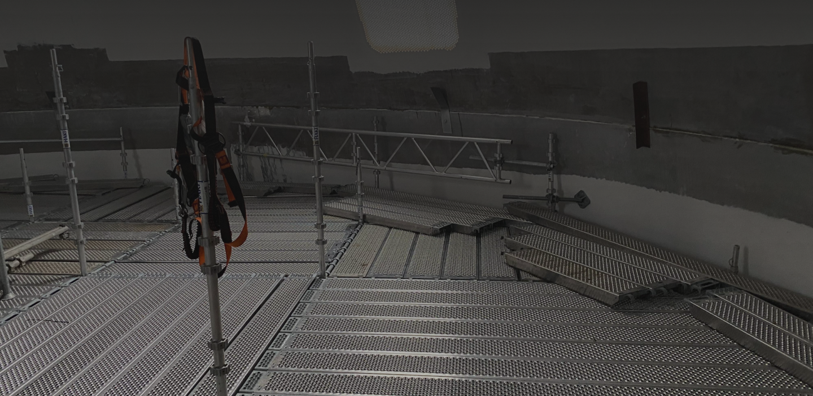

Scaffolding

Facade scaffolding
Stillas benyttes ofte for å gi sikker tilkomst innen bygg, anlegg og
industri – og for å gi forutsigbare arbeidsforhold ift vær og lys.

Facade scaffolding Bergen - a facade scaffolding from
the specialist Bergen Stillas AS.
The facade scaffolding covers the entire area for all types of work in facade construction. The facade scaffolding thus forms the basis for all manual work by painters & varnishers, bricklayers & insulators, roofers, plumbers, window makers and many other craftsmen.
Areas of application for facade scaffolding in Bergen.
What exactly is meant by facade scaffolding? A facade scaffolding is a scaffolding that is assembled from vertical and horizontal support members. The facade scaffolding is a scaffolding that is used for a limited period of time and can be erected on all safe and level surfaces.
Facade scaffolding Bergen - further services.
The top priority in scaffolding is safety. Everyone's safety. We subject our material to constant quality controls and only use safe and approved materials in the construction of facade scaffolding. Of course, we also subject the facade scaffolding to another safety check on site.
Working scaffolding
Working scaffolds are building structures that are assembled from scaffolding components with scaffolding layers of different lengths and widths at the point of use, used according to their intended use and then dismantled again.
Working scaffolds are scaffolding from which work can be carried out. In addition to the employees and their tools, they also have to carry the material required for the work.
Mobile scaffolding
As you can see from the name, mobile scaffolding refers to a type of scaffolding system that can easily move from one spot to another. It is designed to be mobile and portable.
The Aluminum mobile scaffold access tower system is set on castors or wheels to make it easy to move, and is normally used for tasks such as plastering, changing light bulbs, painting and any other overhead work.